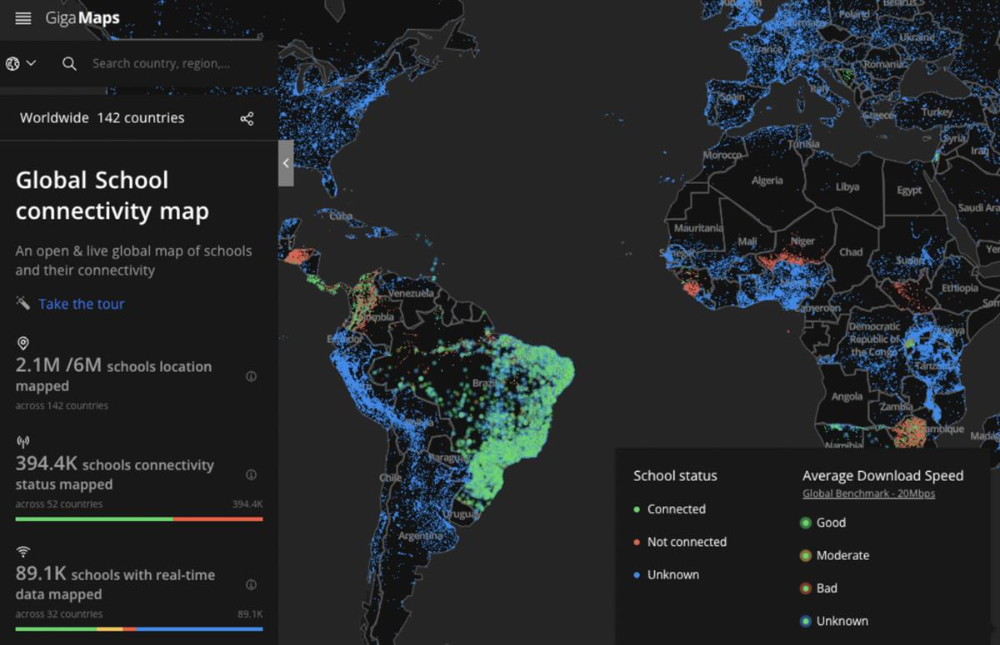

Noonkopir Primary School in Kajiado District, Kenya, on 24 February 2023. Kenya is one of the countries partnering with Giga. (Courtesy of Giga)
ON SOURCE: GENEVA SOLUTIONS
SCIENCE & TECH Education ACTUPublished on July 11, 2024 17:44. / Updated on July 11, 2024 19:02.
How the UN is connecting the world’s classrooms
A UN initiative to connect around six million schools to the internet by 2030 is well underway. The challenges in remote areas with no infrastructure are significant.
A black screen depicts a world map with pulsating green, blue, and red lights. Each dot represents a school’s location and indicates whether it is connected to the internet. The tool was launched last month by Giga, an initiative by Unicef and the International Telecommunication Union (ITU), mainly funded by Switzerland and Spain, that has been working since 2019 on the ambitious goal of ensuring all schools are online by 2030.
The United Nations organisations held their first conference in Geneva this week to showcase their progress after five years. “Whether it's Bosnia-Herzegovina, Botswana, or Sierra Leone, the dots are typically green if you're in an urban space or rich space…red dots are typically in the rural areas, mountainous regions and remote areas,” Chris Fabian, Giga’s co-lead from Unicef, told a crowd of government officials and other attendees, who travelled to Geneva for the two-day event.
Mapping the world’s classrooms
According to the UN, one third of the world doesn’t have access to the internet, a figure that is even higher in the developing world. That includes millions of children who don’t have access to online resources to learn, leaving them at a disadvantage that was deepened during the pandemic.
“We know that connectivity in general increases economic progress and development,” Alex Wong, Giga co-lead from the ITU, told Geneva Solutions, citing a study by the Economist Intelligence Unit that found that a 10 per cent increase in school connectivity can raise GDP in a country by 1.1 per cent.
Giga’s aim is for all schools to have a minimum internet speed of 20 megabytes per second. “If you're in a rural community with a remote school, that level of connectivity would allow teachers in four to five classrooms to use the internet as a tool – not zoom calls, but enough capacity for a teacher to teach a class,” Wong explained, noting that connectivity speed in a European home would be between 50 to 100 Mbps.
But the task is trickier than it sounds, starting with the fact that no one knows exactly how many schools there are in the world, let alone their location and whether they have Wifi. The UN estimates there are roughly six million schools worldwide. Giga has mapped out about a third of them across 142 countries by cross-checking information shared by the governments with satellite imaging and artificial intelligence.
Connecting 11,000 schools in Sierra Leone
Some 34 countries so far have partnered with Giga to determine which schools have access to the internet and develop a plan to connect those that don’t. Sierra Leone stands out as one of the red hot spots on the map.
Out of 11,000 schools identified in the western African country of seven million people, only around 200 had internet access. So far, Sierra Leone has connected a further 43 schools as part of a pilot phase and is working to expand to 400 more schools by the end of 2025, Kahil Ali, head of project design at Sierra Leone’s Directorate of Science, Technology and Innovation, told Geneva Solutions.

A screenshot of Giga's connectivity map.“There are a lot of Sierra Leoneans who are genuinely intelligent, brilliant, dynamic young people. But there's a lack of opportunity, there's a lack of exposure,” he said. “I see it as almost like train tracks, bringing commodities and opportunities. If young people have a chance to become digitally literate, they can participate and be active global citizens.”
Hard choices
With less than a third of Sierra Leone having electricity and coverage dropping to less than five per cent in rural areas where over half of the population lives, Freetown will have to decide where to place those tracks first. “Even if a school may want connectivity, there are certain metrics we need to look at. For example, in terms of the actual physical structure, is it appropriate? Is there a secure storage room?” Ali said, adding that managing expectations was a crucial aspect.
Less than half of Sierra Leoneans use the internet, too – an issue Freetown is hoping to remedy. Last month, Sierra Leone became the 10th African country where SpaceX’s satellite internet service Starlink became operational.
Elon Musk’s charity, the Musk Foundation, is one of Giga’s sponsors, along with the American tech company Dell and the Swedish telecommunications firm Ericsson, which have provided funding to develop open-source tools like the connectivity map.
Part of Giga’s job is also helping countries develop a business plan so they can pay for internet services, buy the necessary equipment like computers and tablets, and train teachers. It can be through philanthropic grants but also bank loans or even internal government resources. Sierra Leone, for example, received a $5 million loan from the Islamic Development Bank for the first round of school connections.
The noble endeavour of bringing the internet to all classrooms also comes with a set of risks for Sierra Leone and others, such as data protection and cybersecurity. Freetown is developing legislation to address these issues, Ali assured.
A new centre in Geneva
After launching a research and development centre in Barcelona, Giga is planning to set up shop in Geneva. The centre, which is expected to open by the end of the year, will host a credits marketplace, a procurement section and a fund.
Wong said that negotiations for the lease were ongoing. He wouldn’t disclose the exact location but confirmed that it won’t be in the Palais des Nations. “We didn't want it to be in the UN because the whole point is to promote collaboration with the private sector in Switzerland, financing institutions and the whole academic ecosystem,” he said.
The centre will host some 20 to 30 staff and offer an open space for entrepreneurs, startups and other enthusiasts to use.
Education Internet Unicef Schools
ON SOURCE: GENEVA SOLUTIONS